library('tidyverse')
library('modelr')
library('nycflights13')
library('lubridate')모델링 b
다이아몬드 예제, 항공기 운항 예제
- 데이터를 패턴과 잔차로 분리한 모델을 들여다보면서 생각해볼 수 있는 점들을 활용할 것이다.
시각화를 통해 패턴을 찾은 다음 모델을 사용하여 패턴을 구체적이고 정확하게 만들 것이다.
이 과정을 반복하며 이전의 반응 변수를 모델의 잔차로 대체할 것이다. 데이터와 머릿속의 내재적인 지식을 정량적 모델의 잔차로 대체할 것이다. 데이터와 머릿속의 내재적인 지식을 정량적 모델의 명시적인 지식으로 전환하는 것이 우리의 목표이다.
이는 새로운 도메인에 쉽게 적용할 수 있으며 다른 도메인에서 쉽게 사용하도록 해줄 것이다.
매우 크고 복잡한 데이터셋의 경우에는 많은 작업이 필요할 것이다. 그렇지만 분명한 개선 방안이 있다.
많은 기계학습 접근법은 단순히 모델의 예측력에 초점을 맞춘다. 이 접근 방식은 블랙박스 모델을 생성하는 경향이 있어 모델이 예측값을 생성하는 데는 훌륭하지만, 그 이유에 대해서는 알 수 없다. 이는 합리적인 접근 방식이지만 실제 지식을 모델에 적용하기에는 어렵다.
결과적으로 기본 원칙이 변함에 따라 장기적으로 모델이 계속 동작할 것인가를 평가하는 것이 어려워진다.
대부분의 실제 모델에서는 이 접근 방식에 더 일반적이고 자동화된 접근 방식을 조합하여 사용한다.
멈추어야 하는 순간을 아는 것은 쉽지 않다. 모델이 충분히 좋아지는 시점과 추가로 시도했을 때 성과가 발생하지 않는 시점을 알아내야 한다.
- 필요한 데이터 셋 패키지
예제1) 낮은 품질의 다이아몬드가 더 비싼 이유는 무엇인가?
ggplot(diamonds, aes(cut, price)) + geom_boxplot()
ggplot(diamonds, aes(color, price)) + geom_boxplot()
ggplot(diamonds, aes(clarity, price)) + geom_boxplot()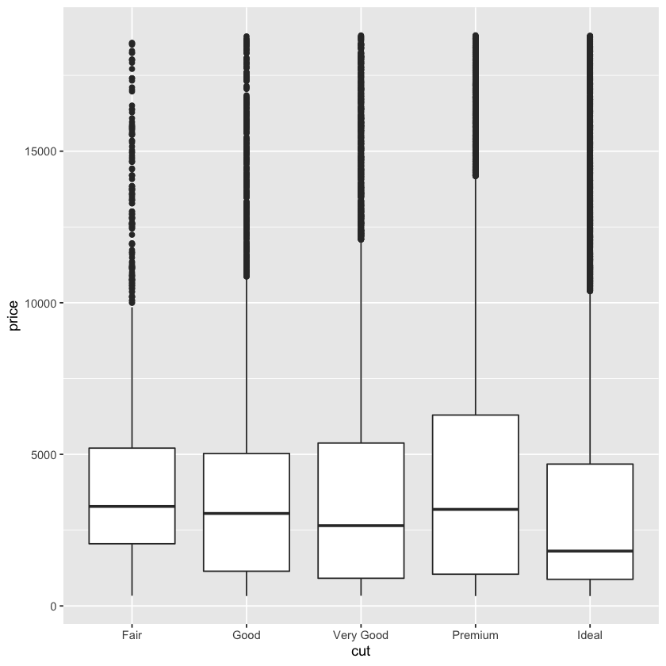
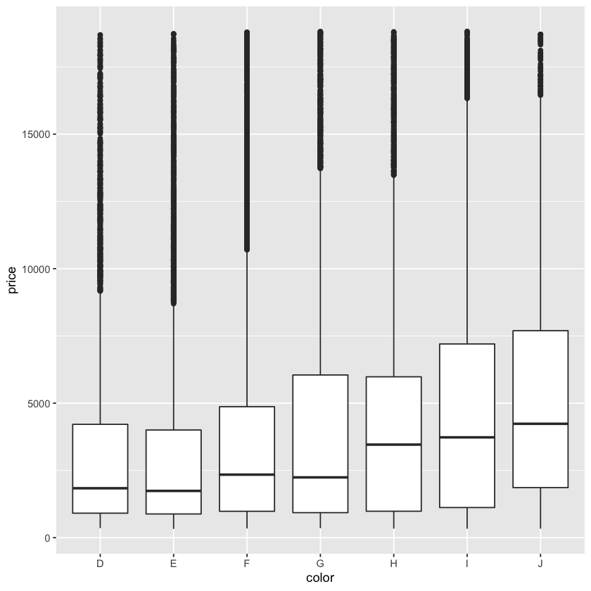
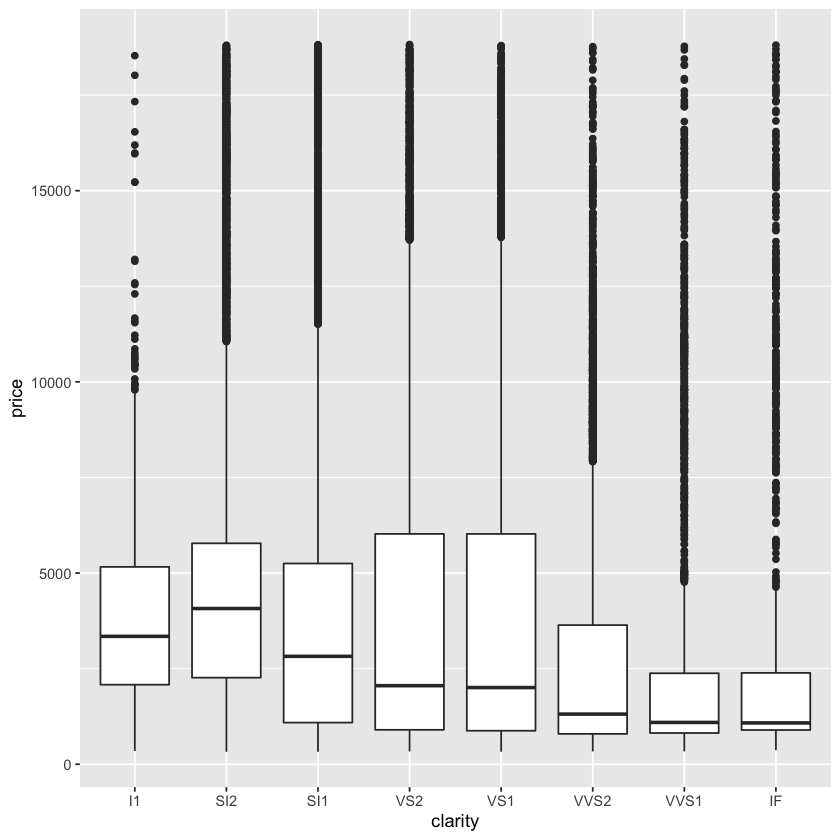
- 퀄리티가 떨어지는 다이아몬드가 평균 단가는 제일 높은 것을 확인할 수 있는데 이는 무게(carat)를 고려하지 않았기 때문이다.
일반적으로 품질이 떨어지는 다이아몬드가 더 무거운 경향이 있다.
ggplot(diamonds, aes(carat, price)) +
geom_hex(bins = 50)Warning message:
“Computation failed in `stat_binhex()`:
”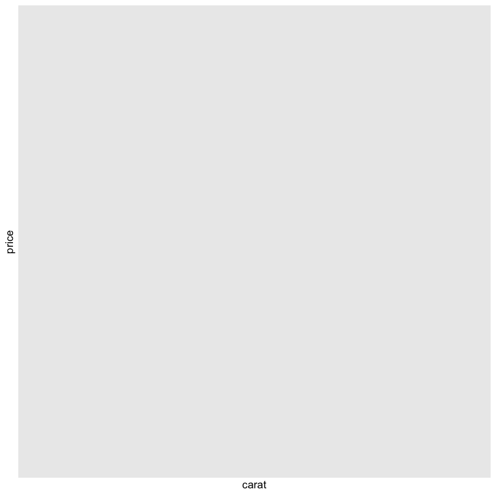
- carat의 효과를 분리하는 모델을 적합하여 다이아몬드의 다른 속성이 상대적으로 price에 어떻게 영향을 주는지 쉽게 알 수 있다.
먼저 작업하기 쉽도록 만들기 위해 아래의 두 가지 항목으로 다이아몬드 데이터셋을 변경한다.
- 2.5캐럿보다 작은 다이아몬드(데이터의 99.7%에 해당)로 한정한다.
- 캐럿과 가격 변수를 로그 변환한다.
diamonds2 <- diamonds %>%
filter(carat <= 2.5) %>%
mutate(lprice = log2(price), lcarat = log2(carat))diamonds2 %>% head| carat | cut | color | clarity | depth | table | price | x | y | z | lprice | lcarat |
|---|---|---|---|---|---|---|---|---|---|---|---|
| <dbl> | <ord> | <ord> | <ord> | <dbl> | <dbl> | <int> | <dbl> | <dbl> | <dbl> | <dbl> | <dbl> |
| 0.23 | Ideal | E | SI2 | 61.5 | 55 | 326 | 3.95 | 3.98 | 2.43 | 8.348728 | -2.120294 |
| 0.21 | Premium | E | SI1 | 59.8 | 61 | 326 | 3.89 | 3.84 | 2.31 | 8.348728 | -2.251539 |
| 0.23 | Good | E | VS1 | 56.9 | 65 | 327 | 4.05 | 4.07 | 2.31 | 8.353147 | -2.120294 |
| 0.29 | Premium | I | VS2 | 62.4 | 58 | 334 | 4.20 | 4.23 | 2.63 | 8.383704 | -1.785875 |
| 0.31 | Good | J | SI2 | 63.3 | 58 | 335 | 4.34 | 4.35 | 2.75 | 8.388017 | -1.689660 |
| 0.24 | Very Good | J | VVS2 | 62.8 | 57 | 336 | 3.94 | 3.96 | 2.48 | 8.392317 | -2.058894 |
- 이 변환은 carat과 price의 관계를 알기 쉽게 만들어준다.
ggplot(diamonds2, aes(lcarat, lprice)) +
geom_hex(bins = 30)Warning message:
“Computation failed in `stat_binhex()`:
”- 로그 변환은 해당 패턴을 작업하기에 가장 쉬운 선형 패턴을 만들어주기 때문에 매우 유용하다. 다음 단계로 넘어가서 강한 선형 패턴을 제거해보자.
먼저 모델을 적합하여 패턴을 명확하게 만든다.
mod_diamond <- lm(lprice ~ lcarat, data = diamonds2)
mod_diamond
Call:
lm(formula = lprice ~ lcarat, data = diamonds2)
Coefficients:
(Intercept) lcarat
12.194 1.681 grid <- diamonds2 %>%
data_grid(carat = seq_range(carat, 20)) %>%
mutate(lcarat = log2(carat)) %>%
add_predictions(mod_diamond, "lprice") %>%
mutate(price = 2^lprice)
ggplot(diamonds2, aes(carat, price)) +
geom_hex(bins = 50) +
geom_line(data = grid, color = "red", size = 1)Warning message:
“Computation failed in `stat_binhex()`:
”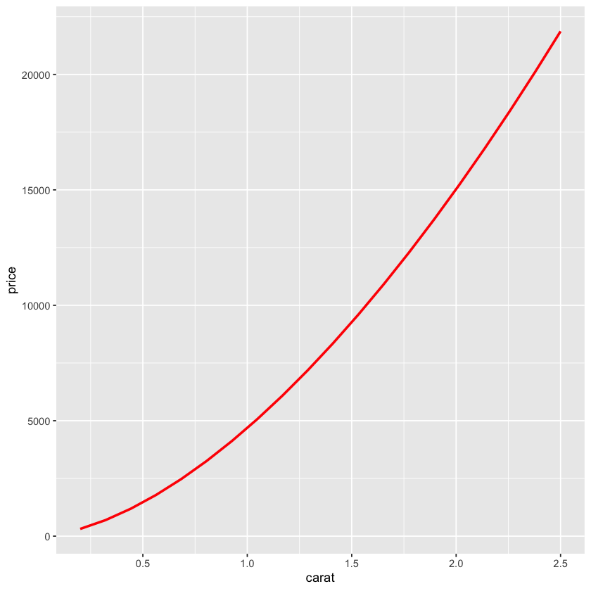
- 위 플롯은 데이터에 대해 흥미로운 사실을 알려준다. 우리의 모델을 신뢰한다면 크기가 큰 다이아몬드는 예측한 값보다 훨씬 저렴하다.
그것은 아마 이 데이터 셋에는 19,000달러가 넘는 다이아몬드가 존재하지 않기 때문이다.
이제 강한 선형 패턴을 제대로 제거했는지 확인하기 위해 잔차를 살펴볼 수 있다.
diamonds2 <- diamonds2 %>%
add_residuals(mod_diamond, "lresid")
ggplot(diamonds2, aes(lcarat, lresid)) +
geom_hex(bins = 50)Warning message:
“Computation failed in `stat_binhex()`:
”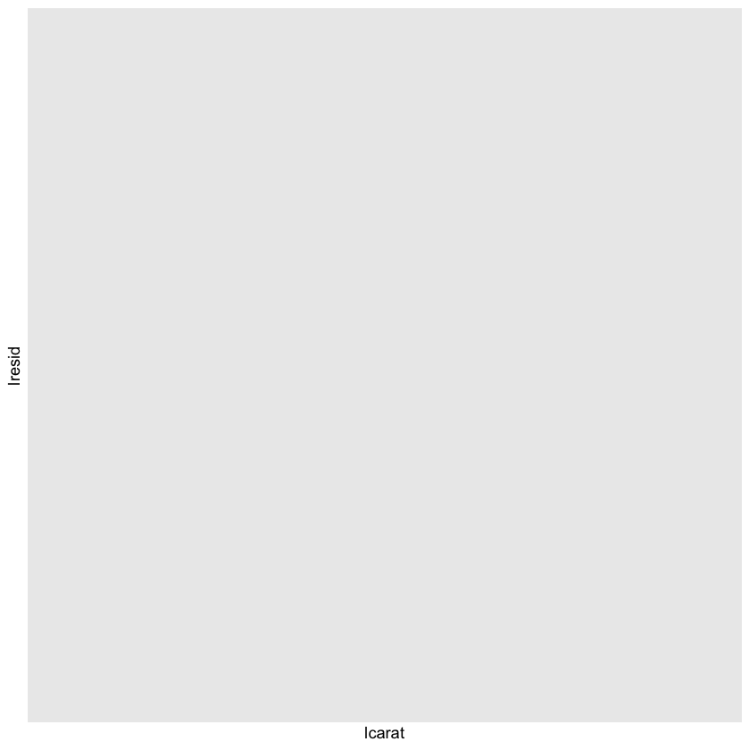
- 비교적 고른 잔차분포를 볼 수 있다.
ggplot(diamonds2, aes(cut, lresid)) + geom_boxplot()
ggplot(diamonds2, aes(color, lresid)) + geom_boxplot()
ggplot(diamonds2, aes(clarity, lresid)) + geom_boxplot()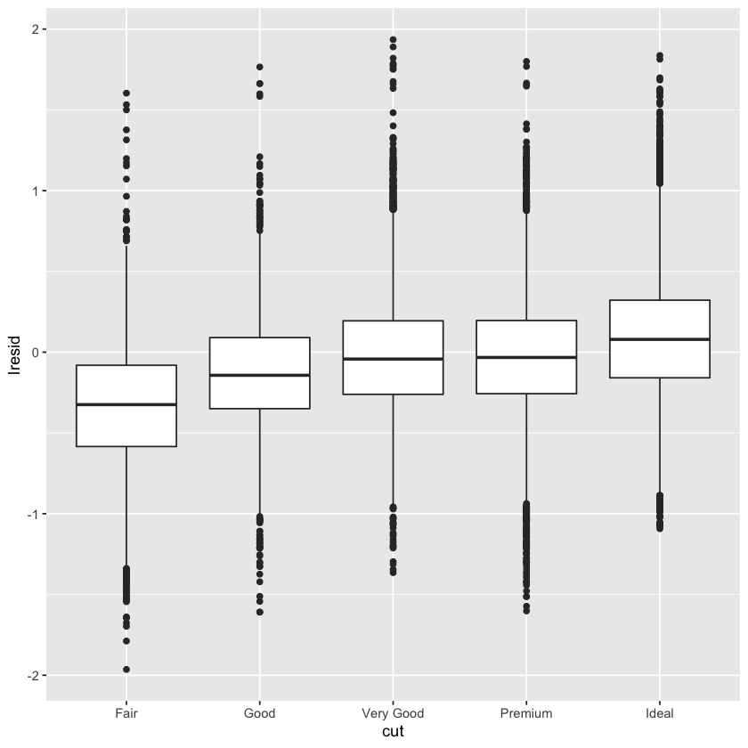
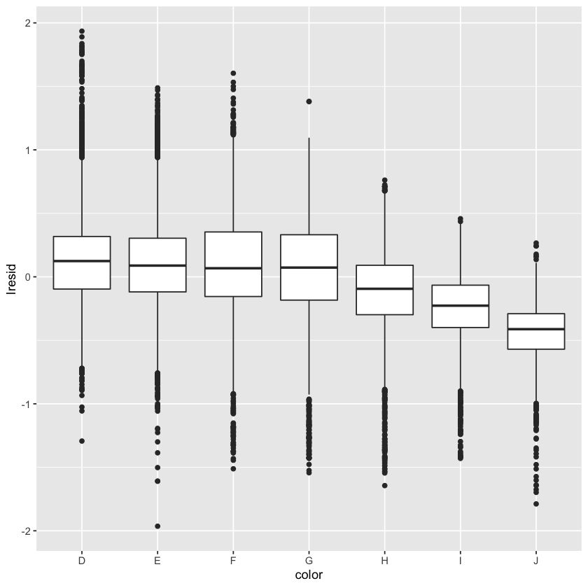
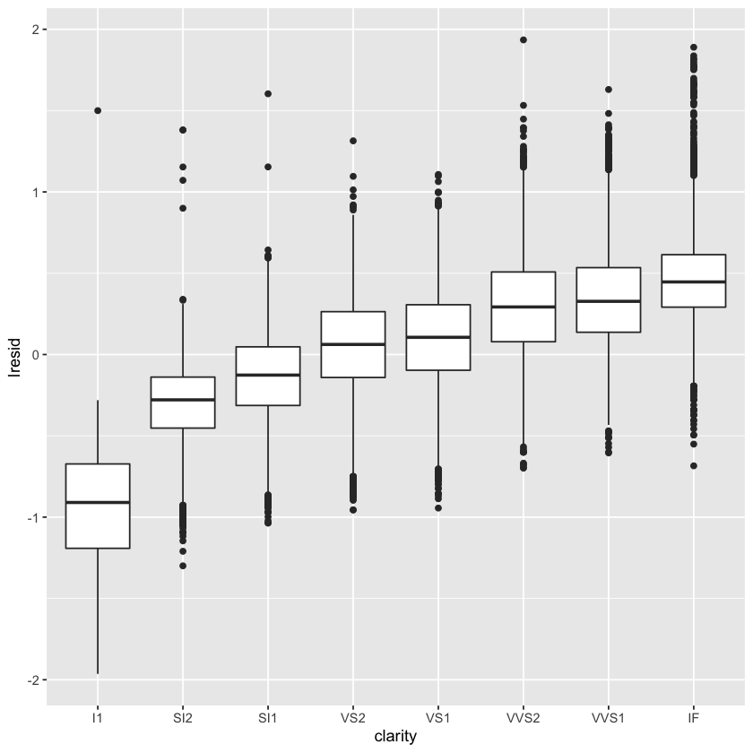
- 이제 예상했던 변수들의 관계를 확인할 수 있다. 다이아몬드의 품질이 좋아질수록 상대적인 가격도 높아진다.
y축을 해석하기 위해 잔차의 의미와 스케일의 값에 대해 생각해볼 필요가 있다.
잔차가 -1이라는 것은 해당 변수만을 이용한 예측값보다 lprice가 한 단위 더 작다는 것을 나타낸다.
\(2^{-1}\)은 1/2이므로 -1인 점은 예측한 가격의 절반에 해당하고, 잔차가 1인 점은 예측한 가격의 두 배를 나타낸다.
더 복잡한 모델
- 원한다면 모델을 명시적으로 만들기 위해 관측한 효과를 모델로 이동하여 계속해서 모델을 발전시킬 수 있다.
예를 들어 color, cut 및 clarity 변수를 모델에 포함하여 이 세 개의 범주형 변수의 효과를 나타낼 수 있다.
mod_diamond2 <- lm(
lprice ~ lcarat + color + cut + clarity,
data = diamonds2
)- 이제 이 모델은 네 개의 예측 변수를 포함하므로 시각화하는 것은 더 어려워진다. 그렇지만 모든 변수가 독립적이므로 네 개의 플롯으로 각각 그릴 수 있다.
이 과정을 좀 더 쉽게 만들기 위해data_grid함수에.model인수를 사용한다.
grid <- diamonds2 %>%
data_grid(cut, .model = mod_diamond2) %>%
add_predictions(mod_diamond2)
grid| cut | lcarat | color | clarity | pred |
|---|---|---|---|---|
| <ord> | <dbl> | <chr> | <chr> | <dbl> |
| Fair | -0.5145732 | G | VS2 | 11.20557 |
| Good | -0.5145732 | G | VS2 | 11.32050 |
| Very Good | -0.5145732 | G | VS2 | 11.37396 |
| Premium | -0.5145732 | G | VS2 | 11.40627 |
| Ideal | -0.5145732 | G | VS2 | 11.43759 |
ggplot(grid, aes(cut, pred)) +
geom_point()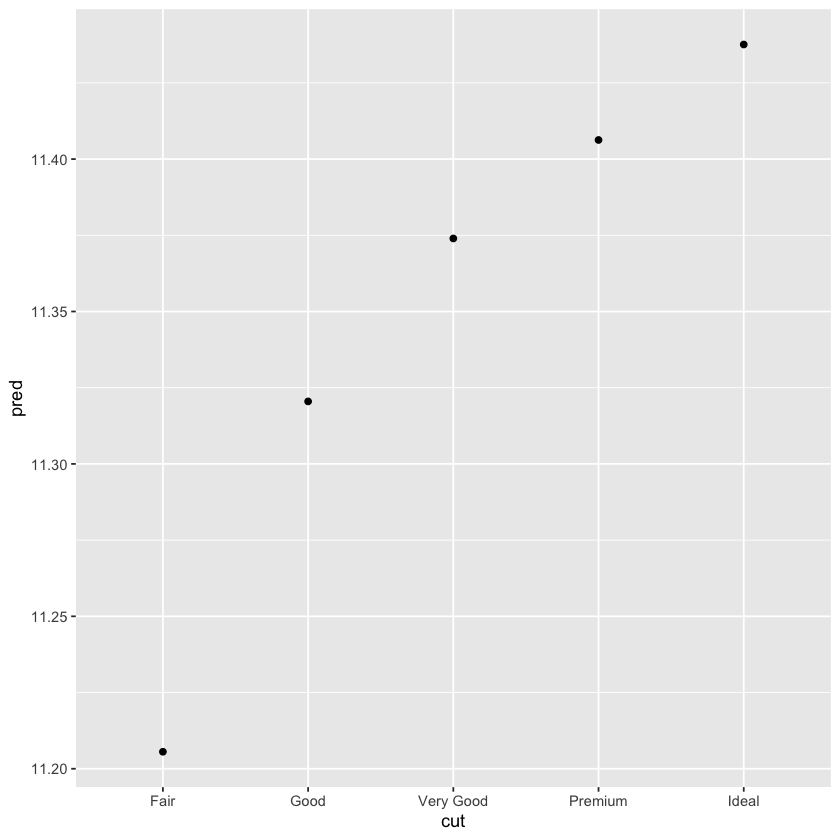
- 명시적으로 제공되지 않는 변수를 모델이 필요로 한다면
data_grid()함수가 자동으로 ’대표적인 값’으로 채운다.
연속형 변수의 경우 중앙값을 사용하고, 범주형 변수의 경우 가장 빈번한 값을 사용한다.
diamonds2 <- diamonds2 %>%
add_residuals(mod_diamond2, "lresid2")
ggplot(diamonds2, aes(lcarat, lresid2)) +
geom_hex(bins = 50)Warning message:
“Computation failed in `stat_binhex()`:
”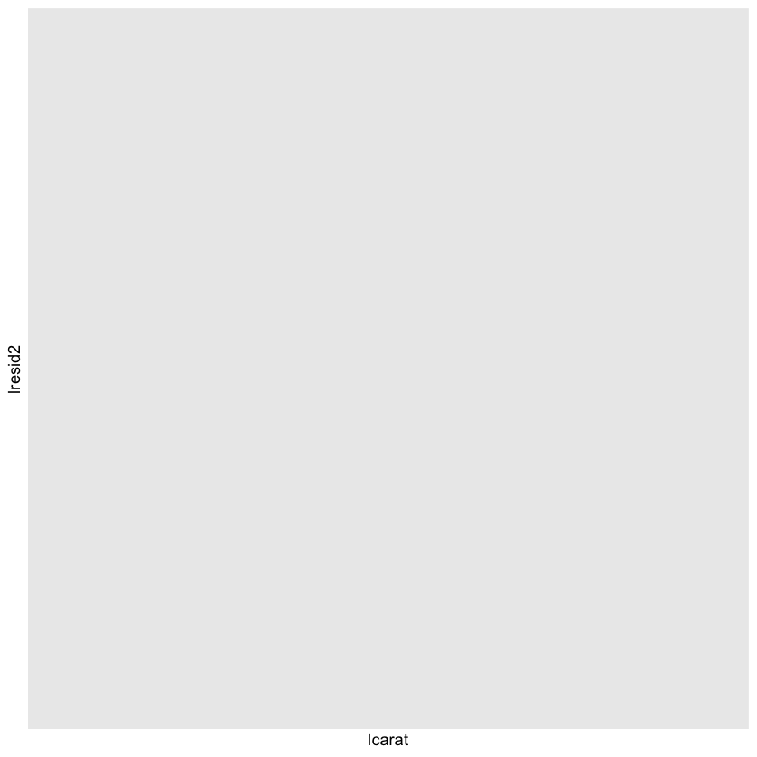
- 이 플롯은 잔차의 값이 큰 다이아몬드가 일부 존재한다는 것을 보여준다. 잔차가 2라는 것은 다이아몬드의 가격이 예상했던 가격의 4배라는 것을 나타낸다.
비정상적인 관측값을 개별적으로 탐색하면 유용할 때가 많다.
diamonds2 %>%
filter(abs(lresid2) > 1) %>%
add_predictions(mod_diamond2) %>%
mutate(pred = round(2^pred)) %>%
select(price, pred, carat:table, x:z) %>%
arrange(price)| price | pred | carat | cut | color | clarity | depth | table | x | y | z |
|---|---|---|---|---|---|---|---|---|---|---|
| <int> | <dbl> | <dbl> | <ord> | <ord> | <ord> | <dbl> | <dbl> | <dbl> | <dbl> | <dbl> |
| 1013 | 264 | 0.25 | Fair | F | SI2 | 54.4 | 64 | 4.30 | 4.23 | 2.32 |
| 1186 | 284 | 0.25 | Premium | G | SI2 | 59.0 | 60 | 5.33 | 5.28 | 3.12 |
| 1186 | 284 | 0.25 | Premium | G | SI2 | 58.8 | 60 | 5.33 | 5.28 | 3.12 |
| 1262 | 2644 | 1.03 | Fair | E | I1 | 78.2 | 54 | 5.72 | 5.59 | 4.42 |
| 1415 | 639 | 0.35 | Fair | G | VS2 | 65.9 | 54 | 5.57 | 5.53 | 3.66 |
| 1415 | 639 | 0.35 | Fair | G | VS2 | 65.9 | 54 | 5.57 | 5.53 | 3.66 |
| 1715 | 576 | 0.32 | Fair | F | VS2 | 59.6 | 60 | 4.42 | 4.34 | 2.61 |
| 1776 | 412 | 0.29 | Fair | F | SI1 | 55.8 | 60 | 4.48 | 4.41 | 2.48 |
| 2160 | 314 | 0.34 | Fair | F | I1 | 55.8 | 62 | 4.72 | 4.60 | 2.60 |
| 2366 | 774 | 0.30 | Very Good | D | VVS2 | 60.6 | 58 | 4.33 | 4.35 | 2.63 |
| 3360 | 1373 | 0.51 | Premium | F | SI1 | 62.7 | 62 | 5.09 | 4.96 | 3.15 |
| 3807 | 1540 | 0.61 | Good | F | SI2 | 62.5 | 65 | 5.36 | 5.29 | 3.33 |
| 3920 | 1705 | 0.51 | Fair | F | VVS2 | 65.4 | 60 | 4.98 | 4.90 | 3.23 |
| 4368 | 1705 | 0.51 | Fair | F | VVS2 | 60.7 | 66 | 5.21 | 5.11 | 3.13 |
| 10011 | 4048 | 1.01 | Fair | D | SI2 | 64.6 | 58 | 6.25 | 6.20 | 4.02 |
| 10470 | 23622 | 2.46 | Premium | E | SI2 | 59.7 | 59 | 8.82 | 8.76 | 5.25 |
- 여기서는 분명하게 눈에 띄는 것은 없지만, 모델에 문제가 있는지 혹은 데이터에 오류가 있는지 생각해보는 데 시간을 투자할 가치가 있다.
만약 데이터에 오류가 있다면 부정확하게 낮은 가격으로 가격이 매겨진 다이아몬드를 사게 될 수도 있다.
예제2) 일일 운항 횟수에 어떤 영향이 있는가?
- 일자별 항공편의 빈도수
daily <- flights %>%
mutate(date = make_date(year, month, day)) %>%
group_by(date) %>%
summarize(n = n())
daily %>% head| date | n |
|---|---|
| <date> | <int> |
| 2013-01-01 | 842 |
| 2013-01-02 | 943 |
| 2013-01-03 | 914 |
| 2013-01-04 | 915 |
| 2013-01-05 | 720 |
| 2013-01-06 | 832 |
ggplot(daily, aes(date, n)) +
geom_line()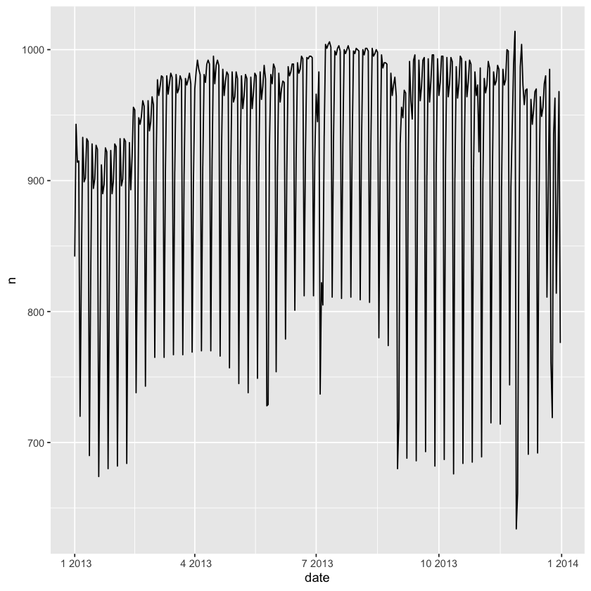
요일
- 요일 효과가 매우 강하게 존재하기 때문에 장기적인 트렌드를 이해하기 쉽지 않다. 먼저 요일별 항공편의 수에 대한 분포를 보면
daily <- daily %>%
mutate(wday = wday(date, label = TRUE))- 한글로 나와서 오류떠서 영어로 바꿔줌
daily <- daily %>%
mutate(wday = fct_recode(wday,
"Sun" = "일",
"Mon" = "월",
"Tues" = "화",
"Wed" = "수",
"Thurs" = "목",
"Fri" = "금",
"Sat" = "토"
))daily %>% head| date | n | wday |
|---|---|---|
| <date> | <int> | <ord> |
| 2013-01-01 | 842 | Tues |
| 2013-01-02 | 943 | Wed |
| 2013-01-03 | 914 | Thurs |
| 2013-01-04 | 915 | Fri |
| 2013-01-05 | 720 | Sat |
| 2013-01-06 | 832 | Sun |
ggplot(daily, aes(wday, n)) +
geom_boxplot()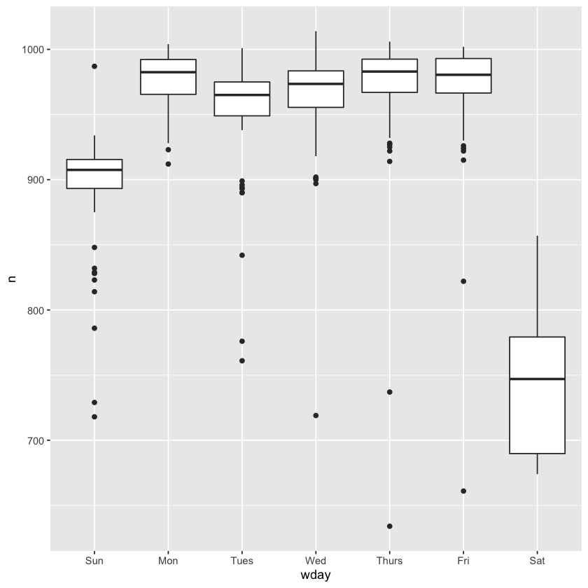
- 대부분 업무를 위해 비행기를 이용하므로 주말에는 항공편의 수가 적다.
그 효과는 특히 토요일에 두드러지게 나타난다. 월요일 아침 미팅을 위해 일요일에 떠나는 경우는 있지만, 토요일에는 가족과 함께 집에 있는 것을 택할 것이므로 토요일에 떠나는 경우는 거의 없다.
이 강력한 패턴을 제거하는 한 가지 방법은 모델을 사용하는 것이다. 먼저 모델을 생성하고 원 데이터에 예측값을 겹처서 나타낸다.
mod <- lm(n ~ wday, data = daily)
grid <- daily %>%
data_grid(wday) %>%
add_predictions(mod, "n")
ggplot(daily, aes(wday, n)) +
geom_boxplot() +
geom_point(data = grid, color = "red", size = 4)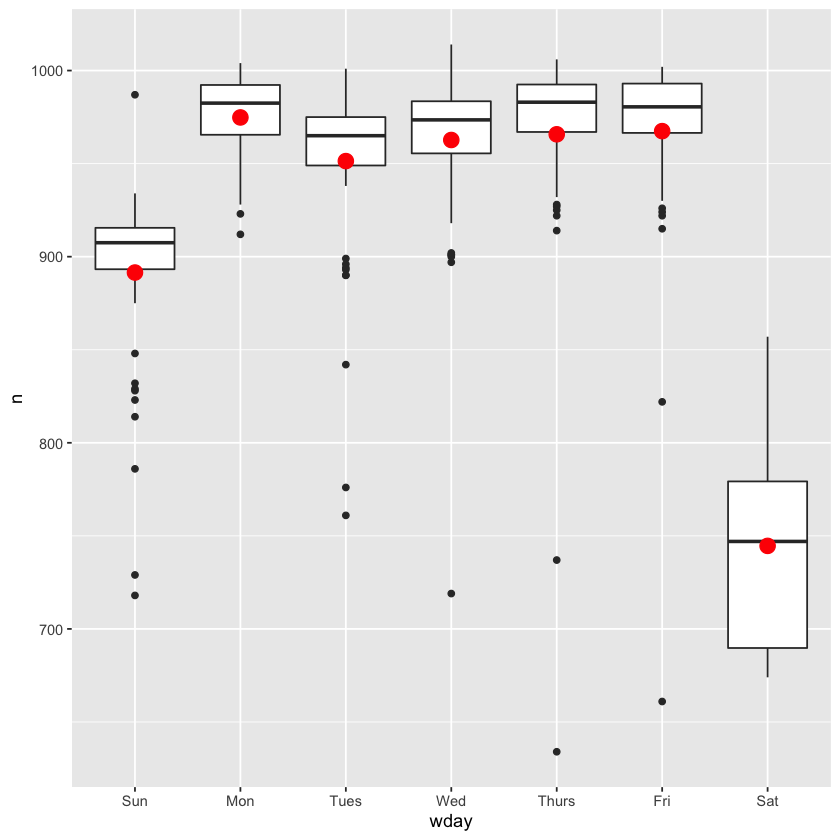
- 다음으로 잔차를 계산한 후 시각화한다.
daily <- daily %>%
add_residuals(mod)
daily %>%
ggplot(aes(date, resid)) +
geom_ref_line(h = 0) +
geom_line()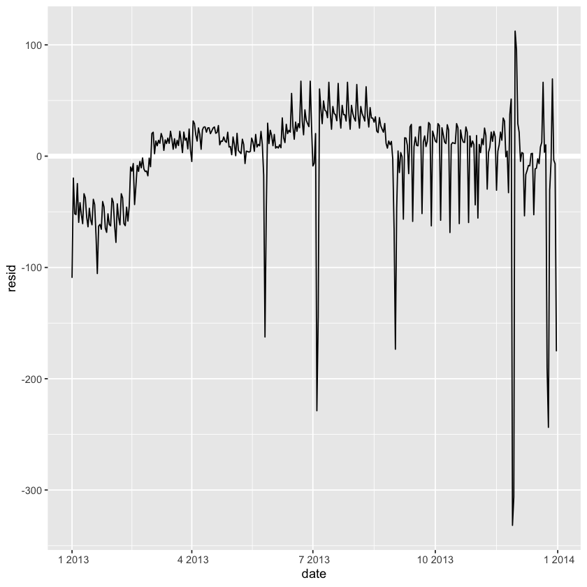
- y축 변화를 보면 일자마다 예측한 비행 횟수의 편차를 확인할 수 있다.
요일 효과의 많은 부분을 제거하여 남아있는, 감지하기 어려운 패턴을 확인할 수 있으므로 이 플롯은 유용하다고 할 수 있다.
이 모델은 6월부터 잘 맞지 않는 것처럼 보인다. 여전히 모델이 포착하지 못한 규칙적이고 강한 패턴을 확인할 수 있다.
각 요일을 한 줄씩 플롯으로 그리면 그 원인을 쉽게 확인할 수 있다.
ggplot(daily, aes(date, resid, color = wday)) +
geom_ref_line(h = 0) +
geom_line()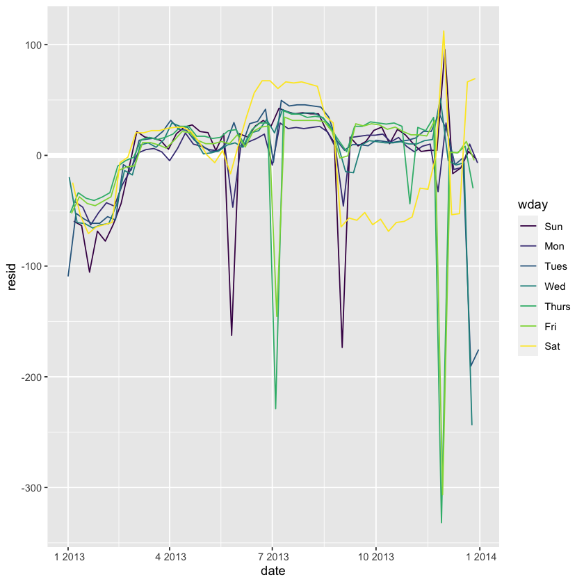
- 위의 모델은 플롯으로 보았을 때 토요일의 비행 횟수를 정확하게 예측하지 못한다. 여름에는 예측한 값보다 많은 항공편이 있고, 가을에는 더 적은 항공편이 있다.
daily %>%
filter(resid < -100)| date | n | wday | resid |
|---|---|---|---|
| <date> | <int> | <ord> | <dbl> |
| 2013-01-01 | 842 | Tues | -109.3585 |
| 2013-01-20 | 786 | Sun | -105.4808 |
| 2013-05-26 | 729 | Sun | -162.4808 |
| 2013-07-04 | 737 | Thurs | -228.7500 |
| 2013-07-05 | 822 | Fri | -145.4615 |
| 2013-09-01 | 718 | Sun | -173.4808 |
| 2013-11-28 | 634 | Thurs | -331.7500 |
| 2013-11-29 | 661 | Fri | -306.4615 |
| 2013-12-24 | 761 | Tues | -190.3585 |
| 2013-12-25 | 719 | Wed | -243.6923 |
| 2013-12-31 | 776 | Tues | -175.3585 |
- 1년에 걸친 장기간의 매끄러운 추세가 나타나는 것처럼 보이는데
geom_smooth()을 사용하여 이러한 추세를 강조할 수 있다.
daily %>%
ggplot(aes(date, resid)) +
geom_ref_line(h = 0) +
geom_line(color = "grey50") +
geom_smooth(se = FALSE, span = 0.20)`geom_smooth()` using method = 'loess' and formula 'y ~ x'
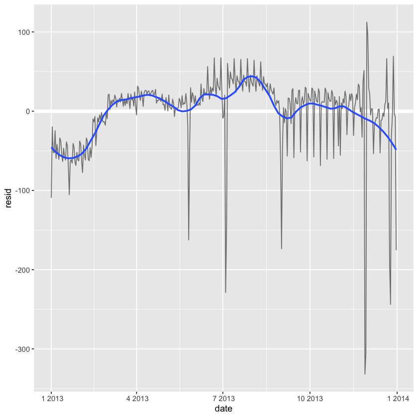
- 항공편의 수는 1월(그리고 12월)에 더 적고, 여름(5월~9월)에 더 많다. 데이터가 1년치밖에 없으므로 이 패턴을 정량적으로 많이 다룰 수 없다.
그렇지만 도메인 지식을 사용하여 잠재적인 이유를 생각해 낼 수 있다.
주기적인 토요일 효과
- 먼저 토요일의 비행 횟수를 정확하게 예측하지 못한 문제를 다뤄보면 처음에는 토요일로 한정한 원 데이터로 돌아가는 것이 좋다.
daily %>%
filter(wday == "Sat") %>%
ggplot(aes(date, n)) +
geom_point() +
geom_line() +
scale_x_date(
NULL,
date_breaks = "1 month",
date_labels = "%b"
)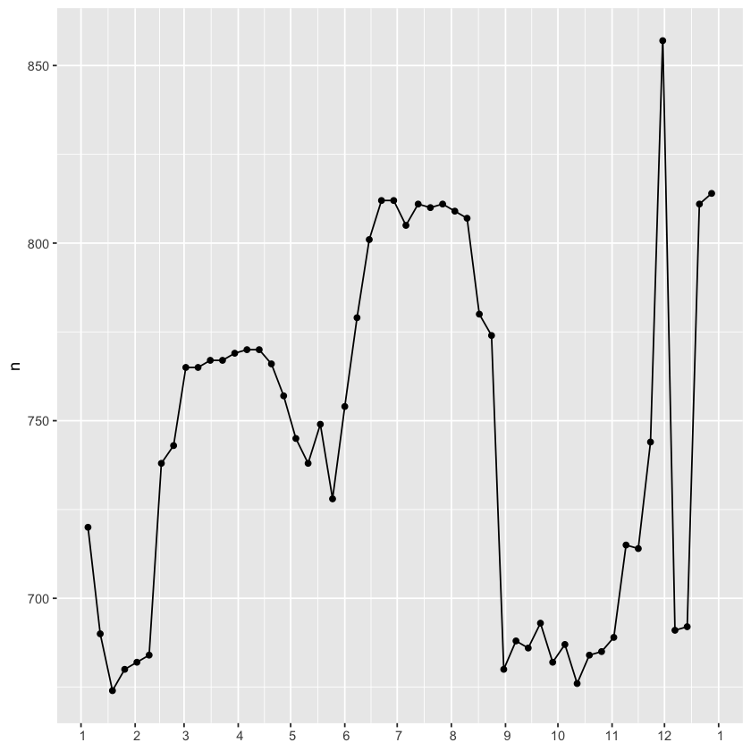
- 이 패턴은 여름 휴가로 인해 발생된 것으로 추측하다. 사람들은 대부분 여름에 휴가를 휴가를 위해 토요일에 출발하는 것을 개의치 않는다.
이 플롯을 보면 여름 휴가 기간은 6월 초에서 8월 말까지로 추측할 수 있다.
이 기간은 주립 학교의 여름방학 기간(2013년의 여름방학은 6월 26일부터 9월 9일까지)과 꽤 잘 맞는 것처럼 보인다.
가을보다 봄에 토요일 비행이 더 많은 이유는 무엇인가? 미국인 친구들에게 물어보니 가을에는 추수감사절과 크리스마스가 있어 가족 휴가를 계획하는 것이 일반적이지 않다는 의견을 주었다. 확신할 수 있는 데이터는 없지만 그럴듯한 가설인 것 같다.
대략 세 개의 학기를 포함하는 ’학기(term)’변수를 만들고 플롯으로 확인해보자.
term <- function(date){
cut(date,
breaks = ymd(20130101, 20130605, 20130825, 20140101),
labels = c("spring", "summer", "fall")
)
}
daily <- daily %>%
mutate(term = term(date))daily %>%
filter(wday == "Sat") %>%
ggplot(aes(date, n, color = term)) +
geom_point(alpha = 1/3) +
geom_line() +
scale_x_date(
NULL,
date_breaks = "1 month",
date_labels = "%b"
)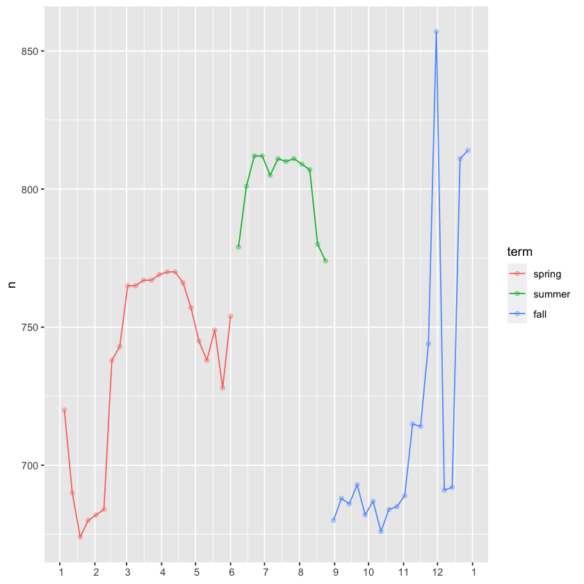
- 이 플롯에서는 변화를 잘 나타내기 위해 날짜를 수동으로 조정했다. 시각화를 사용하여 함수의 역할을 이용하도록 도와주는 것은 매우 강력하고 일반적인 기술이다.
이 새로운 변수가 다른 요인에 어떤 영향을 미치는지 확인하는 것은 유용하다.
daily %>%
ggplot(aes(wday, n, color = term)) +
geom_boxplot()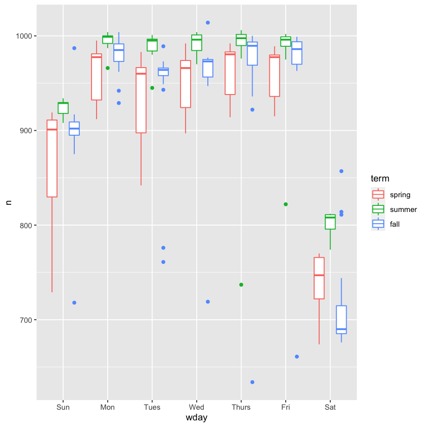
- 학기 전반에 걸쳐 상당한 변동이 있는 것처럼 보이므로 각 학기에 대해 별도의 요일 효과를 적용하는 것이 합리적이다.
요일 효과는 모델을 개선하기는 하지만 기대할 수 있는 만큼은 아니다.
mod1 <- lm(n ~ wday, data = daily)
mod2 <- lm(n ~ wday * term, data = daily)daily %>%
gather_residuals(without_term = mod1, with_term = mod2) %>%
ggplot(aes(date, resid, color = model)) +
geom_line(alpha = 0.75)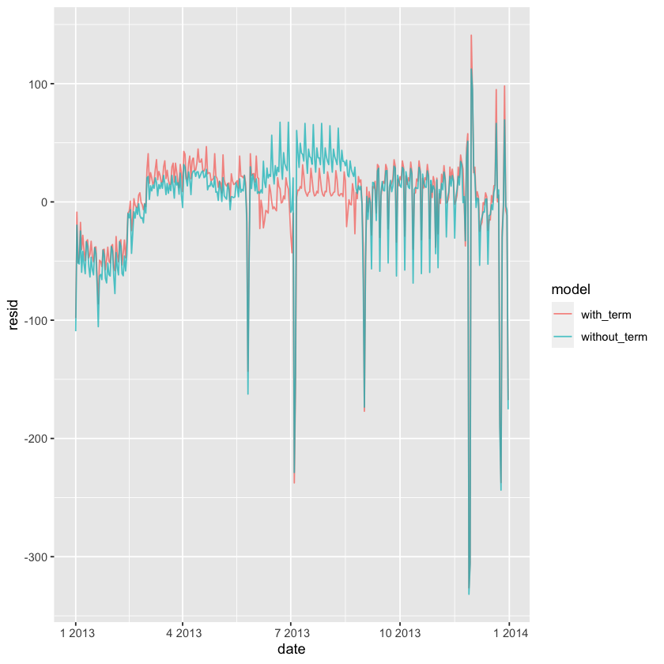
- 모델로 예측한 값을 원 데이터에 겹쳐 그리면 문제를 확인할 수 있다.
grid <- daily %>%
data_grid(wday, term) %>%
add_predictions(mod2, "n")
ggplot(daily, aes(wday, n)) +
geom_boxplot() +
geom_point(data = grid, color = "red") +
facet_wrap(~ term)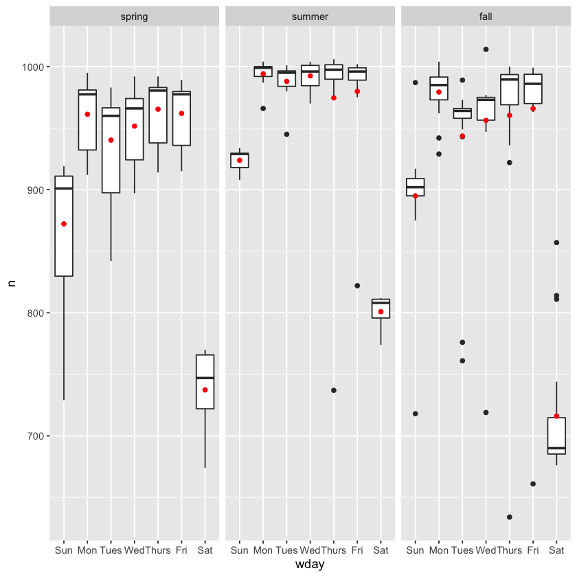
모델은 평균 효과를 찾지만, 값이 큰 이상값들이 많이므로 평균값은 일반적인 값과 멀어지는 경향이 있다. 이 문제는 이상값에 영향을 덜 받는(robust)모델을 사용하여 완화할 수 있다.
바로 MASS::rlm()을 사용하는 것이다. 이 함수는 이상값이 추정값에 미치는 영향을 줄이고 요일 패턴을 제거하는 모델을 제공한다.
mod3 <- MASS::rlm(n ~ wday * term, data = daily)
daily %>%
add_residuals(mod3, "resid") %>%
ggplot(aes(date, resid)) +
geom_hline(yintercept = 0, size = 2, color = "white") +
geom_line()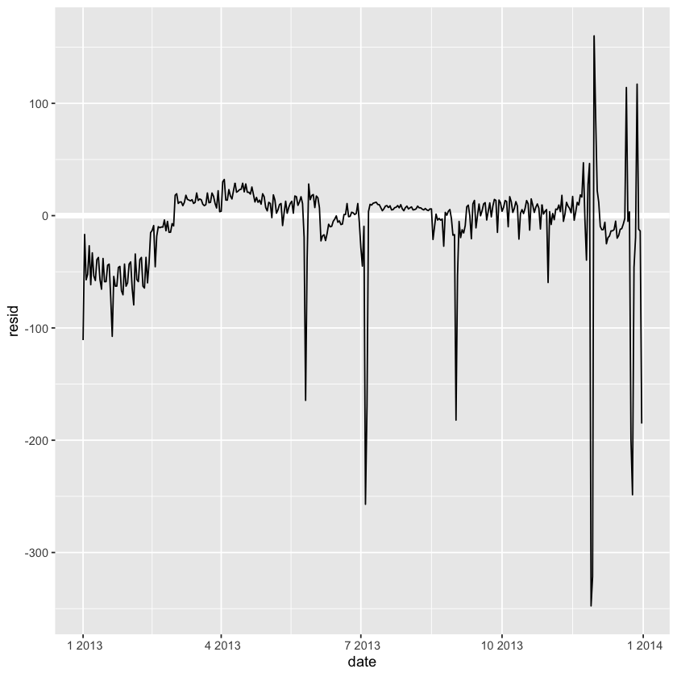
장기적인 추세와 양과 음의 이상값을 훨씬 쉽게 확인할 수 있다.
계산된 변수
- 많은 모델과 시각화를 경험해보고 있다면 변수 생성 과정을 함수로 묶어 항상 같은 변형을 적용하는 것이 좋다. 예를 들어 다음과 같이 작성할 수 있다.
compute_vars <- function(data){
data %>%
mutate(
term = term(date),
wday = wday(date, label = TRUE)
)
}- 또 다른 옵션은 모델 수식셍 변형을 바로 넣는 것이다.
wday2 <- function(x) wday(x, label = TRUE)
mod3 <- lm(n ~ wday2(date) * term(date), data = daily)- 두 방법 모두 합리적이다. 변형된 변수를 명시적으로 만드는 것은 작업을 확인하거나 변수를 시각화에 사용하려는 경우 유용하다.
그러나 여러 열을 반환하는 변형(예: 스플라인)은 쉽게 사용할 수 없다.
모델 함수에 변형을 포함하면 모델 자체에서 변형되기 때문에 다양한 데이터셋으로 작업하는 경우에 좀 더 쉽게 사용할 수 있다.
연중 시각: 다른 접근법
이전 절에서는 모델을 향상하기 위해 도메인 지식(미국의 학기가 여행에 미치는 영향)을 사용했다.
모델에 명시적으로 지식을 포함시키는 방법 대신 다차원의 데이터를 포함하도록 하는 방식도 있다.
그것은 더 유연한 모델을 사용하여 관심 있는 패턴을 포착하는 것이다.
이때 간단한 선형 추세는 적합하지 않기 때문에 1년의 기간에 대해서 매끄러운 곡선을 적합하기 위해 자연스러운 스플라인을 적용해볼 수 있다.
library('splines')mod <- MASS::rlm(n ~ wday * ns(date, 5), data = daily)
daily %>%
data_grid(wday, date = seq_range(date, n = 13)) %>%
add_predictions(mod) %>%
ggplot(aes(date, pred, color = wday)) +
geom_line() +
geom_point()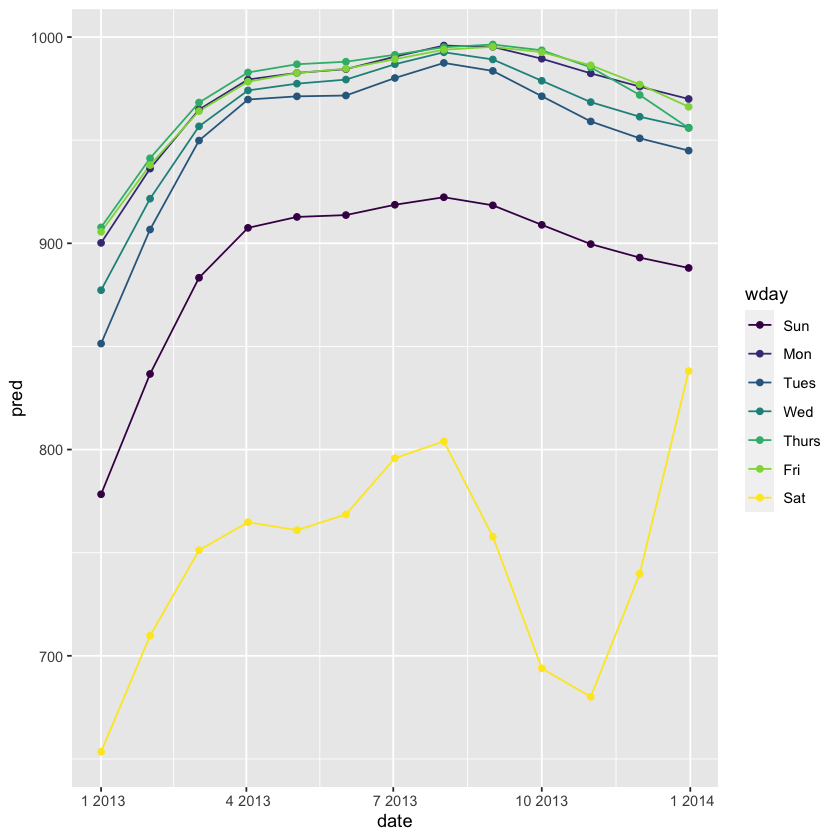
- 토요일의 비행 횟수에서 강한 패턴을 확인할 수 있다. 이는 원 데이터에서 보았던 패턴이므로 안심할 수 있는 결과이다.
서로 다른 접근법으로 같은 시그널을 얻는다면 그건 좋은 신호라 할 수 있다.